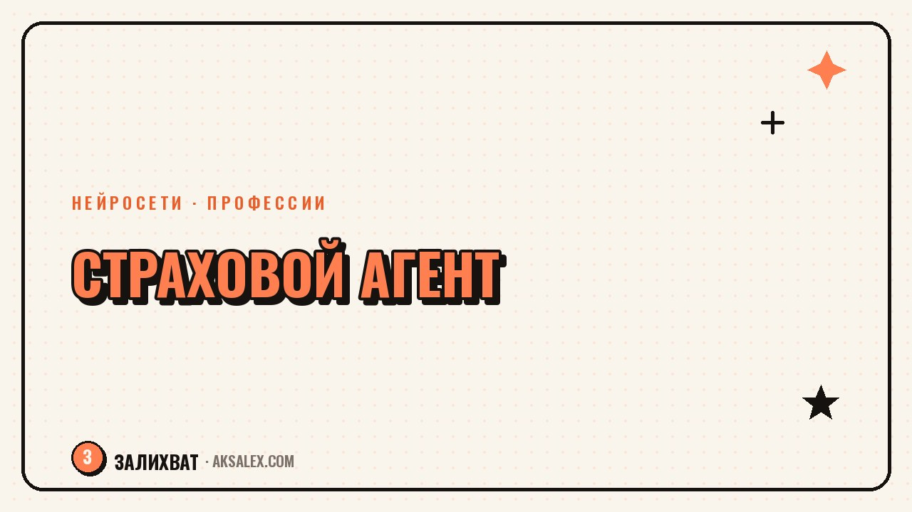

Нейросети для страхового агента: обзор инструментов

Работа страхового агента держится на двух вещах: доверии клиента и скорости ответа. Пока агент считает варианты тарифов и готовит объяснение простыми словами, клиент может уйти к тому, кто ответил быстрее. Нейросети не продают страховку за агента, но заметно сокращают время на рутину - от черновика ответа клиенту до разбора формулировок в договоре. Разберём, где ИИ в этой работе реально выручает, а где доверять ему нельзя.
Что в работе агента можно отдать нейросети
Большая часть рабочего дня агента - это не продажи, а объяснения. Клиент не понимает разницу между франшизой и лимитом ответственности, путает КАСКО и ОСАГО, задаёт один и тот же вопрос про возврат страховки разными словами. Отвечать на это каждый раз заново - потеря времени.
Задачи, где ИИ экономит часы
- Объяснение условий страховки простыми словами для конкретного клиента
- Черновики ответов на типовые вопросы в переписке
- Тексты для соцсетей и рассылок без копирайтера
- Сравнение формулировок в разных договорах
Выбор тарифа, оценку риска и итоговое решение по сложному случаю нейросеть не заменяет - здесь нужны опыт агента и знание конкретной страховой компании.
Как объяснять клиенту условия договора с помощью ИИ
Текстовые нейросети вроде ChatGPT и ЯндексGPT хорошо справляются с переводом канцелярского языка договора в обычную речь. Достаточно вставить пункт договора и попросить объяснить его так, как объяснил бы агент клиенту без страхового образования.
Клиент не читает весь договор. Он хочет услышать одно: что именно покрывает страховка в его ситуации и что не покрывает. Нейросеть помогает собрать такой ответ за минуту вместо пятнадцати.
Важно: нейросеть пересказывает текст, который ты сам ей дал, а не придумывает условия страховки из головы. Если скормить ей неполный пункт договора, объяснение получится неполным и может ввести клиента в заблуждение.
Нейросети для текстов и соцсетей агента
Многие агенты ведут соцсети или рассылки, чтобы напоминать клиентам о продлении полиса и привлекать новых. Писать посты вручную каждую неделю - рутина, которую легко переложить на нейросеть, если дать ей конкретный повод и аудиторию.
| Сервис | Для чего годится | Ограничение |
|---|---|---|
| ChatGPT | Посты, рассылки, ответы клиентам | Нужна проверка фактов и цифр |
| ЯндексGPT | Тексты на русском с учётом местных реалий | Иногда суше по стилю |
| Canva Magic Write | Быстрые короткие тексты для карточек в соцсетях | Слабее в развёрнутых объяснениях |
Темы постов, которые пишутся быстро с ИИ
- Напоминание о продлении полиса с конкретной датой
- Разбор частого страхового случая без запугивания
- Ответ на вопрос из комментариев в формате короткого поста
Где нейросети опасны в страховании
Главный риск - юридическая точность. Нейросеть может уверенно написать неверную трактовку условий страхования, а клиент примет решение на основе этого текста. Любой ответ, который касается конкретных сумм, сроков и исключений, агент обязан проверить по реальному договору и правилам компании перед отправкой клиенту.
Второй риск - персональные данные клиента. Паспортные данные, номер полиса, диагнозы по страхованию жизни нельзя вставлять в публичные нейросети без согласия клиента и без понимания, как сервис хранит данные. Для черновика объяснения достаточно обезличенного примера условий, без реальных имён и номеров.
Как внедрить ИИ в работу агента без риска
Начинать стоит не с самых чувствительных задач, а с тех, где ошибка нейросети не стоит дорого: черновик поста, вариант ответа на частый вопрос, структура объяснения сложного термина.
Порядок внедрения
- Шаг 1: собери 5-10 вопросов, которые клиенты задают чаще всего
- Шаг 2: попроси нейросеть дать черновой ответ на каждый, без личных данных клиента
- Шаг 3: проверь каждый ответ по реальным правилам страховой компании
- Шаг 4: сохрани проверенные формулировки как шаблоны для быстрых ответов
- Шаг 5: обновляй шаблоны, когда меняются условия продукта
Частые вопросы
Может ли нейросеть посчитать стоимость страховки за агента?
Нет, расчёт тарифа делает система страховой компании на основе её собственных формул и рисков. Нейросеть может помочь объяснить клиенту, из чего складывается итоговая сумма, но саму цифру она не считает и не должна придумывать.
Можно ли вставлять данные клиента в ChatGPT при разборе договора?
Лучше не вставлять паспортные данные, номер полиса и другую личную информацию в публичные нейросети. Безопаснее убрать конкретные данные и работать с обезличенным примером условий, а личные детали добавлять уже вручную в готовый ответ.
Какая нейросеть лучше подходит для страхового агента?
Для объяснений и переписки с клиентами удобны ChatGPT и ЯндексGPT, для коротких постов в соцсетях - Canva Magic Write. Выбор зависит от задачи: для длинных разборов договора лучше текстовая модель, для карточек - визуальный редактор с текстом.
Заменит ли ИИ страхового агента?
Нет, агент отвечает за итоговое решение, знание конкретных условий компании и доверие клиента, а это не передаётся нейросети. ИИ забирает рутину - черновики текстов и объяснений, оставляя агенту сложные случаи и живое общение.
С чего начать агенту, который никогда не пользовался нейросетями?
Начни с одной повторяющейся задачи, например с ответов на частые вопросы клиентов. Попроси нейросеть дать черновой вариант без личных данных, проверь его по правилам своей компании и сохрани как шаблон для следующих обращений.
Раз тема оказалась полезной, вот что почитать следующим. Нейросети для таргетолога: тексты объявлений, креативы и отчёты клиентам без лишних часов работы.
Читать статью →а не вручную